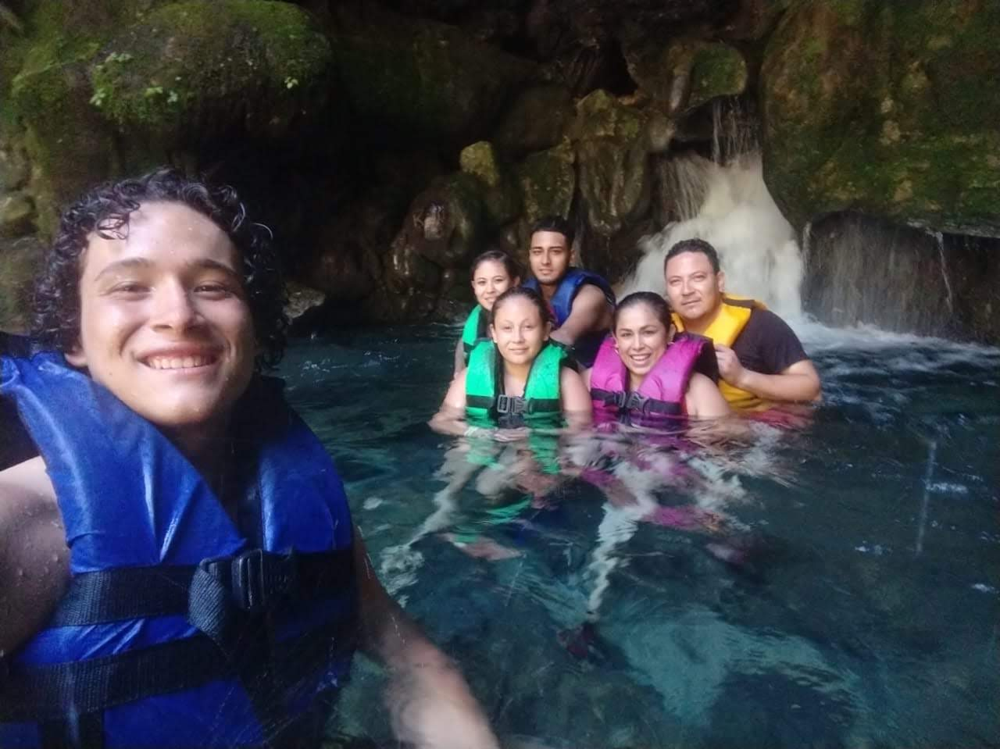
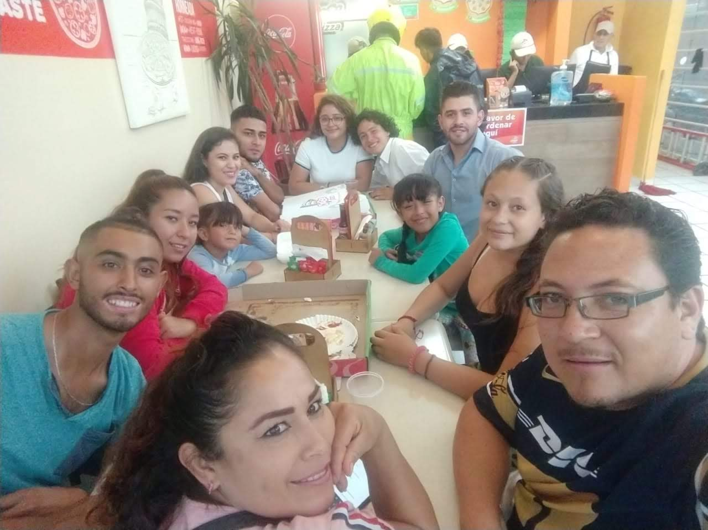

Mi nombre es Sara Abigail Perez Garcia, tengo 20 años, estudio en el tecnologico de Leon. En la carrera Tecnologias de la informacion y comunicacion.
Mi pasatiempo favorito es escuchar musica, en la cual me gustan de todo tipo de genero de musica pero me gusta mas el pop y la banda.
Los generos que mas me gustan en peliculas son las de;
En el paque de la selva que se encuentra ubicado en el bulevar Juan Alonso Torres en plaza galerias adentro.
Tel: 477 578 34 95
Cuidando a una niña en una casa, en el cual se encuentra ubicada en la calle joaquin soto #213 en la colonia Leon 1.
Tel: 477 765 98 43
En un restaurante de niñera en el cual se encuentra ubicadon en plaza mayor.
Tel: 477 745 76 12
Mi padre se llama Oscar Alfredo Perez Hinojosa, tiene 39 años y mi madre se llama Ma. Ester Garcia Muñiz, tiene 42 años. Tengo 3 hermanos y 1 hermana:
Mi hermano el mayor tiene 25 años su nombre es Eduardo Mireles Garcia, trabaja en castores ya que termino su carrera de criminologia, esta comprometido desde hace 2 años. el que sigue de ahi tiene 23 años se llama Adrian Mireles Garcia, el ya esta juntado desde hace 5 años, tiene 2 niñas, la mas grande se llama Naomi Scarleth MIreles de la Cruz y la mas chica se llama Valeria Yanel Mireles de la Cruz. Ellos ya viven aparte en un departamento que se encuentra ubicado cercas de delta. De ahi sigo yo y despues sigue mi hermano que tiene 18 años se llama Oscar Alfredo Perez Garcia en el cual esta estudiando la preparatoria (Esta a punto de concluirla) el esta soltero y trabaja en la Aranda de la parra en el cual esta ejerciendo lo que esta estudiando y la mas chiquita de la casa se llama Ester Estefania Perez Garcia la cual tiene 14 años y esta estudiando la secundaria.
|  |  | ||||
|---|---|---|---|---|---|
NOMBRE: Marcos Placencia Gutierrez.
UBICACION: Rodrigo MOreno Zermeño #206 Col. Leon 1
PERIODO: 2004 -2010
TEL: 477 456 62 74
NOMBRE: Telesecundaria Num. 10.
UBICACION: San carlos de Romo #231, Col. Los presidentes.
PERIODO: 2010 - 2013
TEL: 477 948 52 74
NOMBRE: Octavio Paz.
UBICACION: Dr. Hernandez Alvarez 201, Centro.
PERIODO: 2013 - 2016
TEL: 477 730 34 00
SITIO WEBNOMBRE: Instituto Tecnologico de Leon.
UBICACION: Montadores S/n, Industrial Julian de Obregon
PERIODO: 2017 -
TEL: 477 710 52 00
SITIO WEB